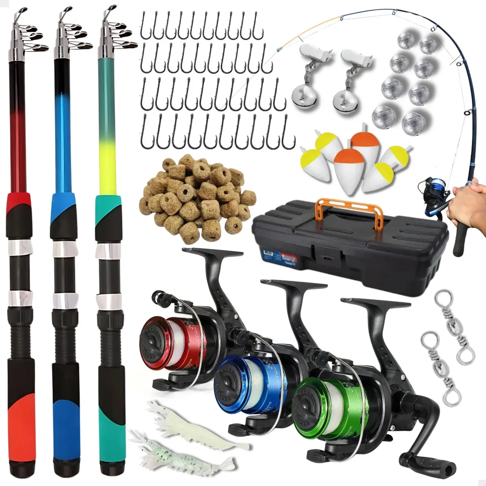
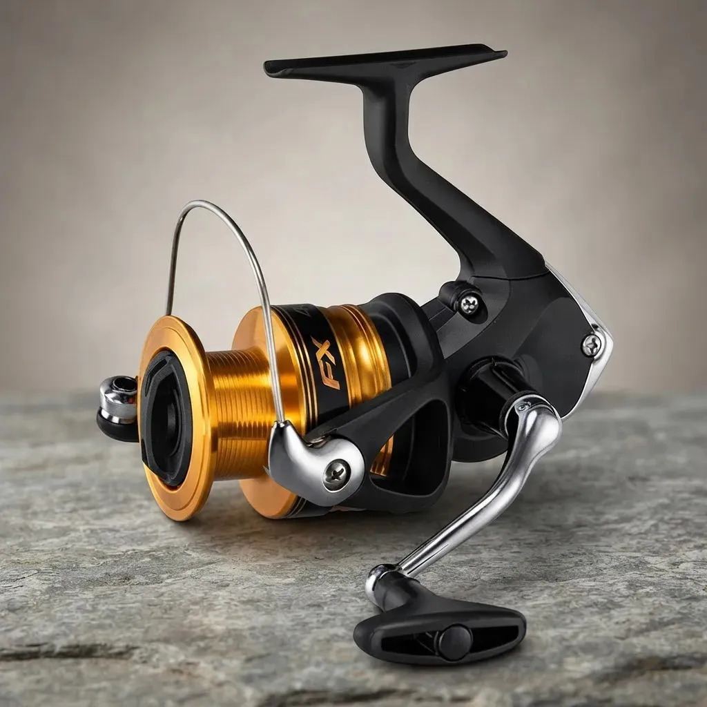
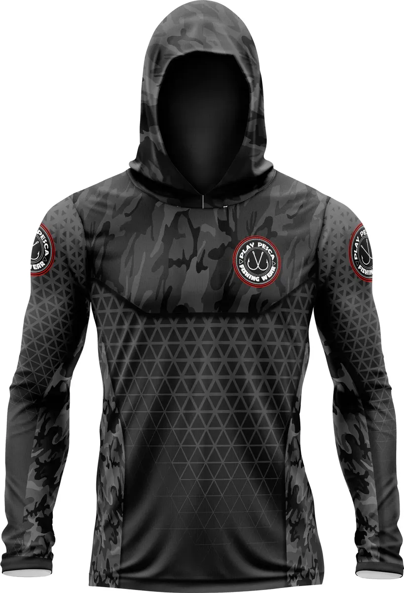
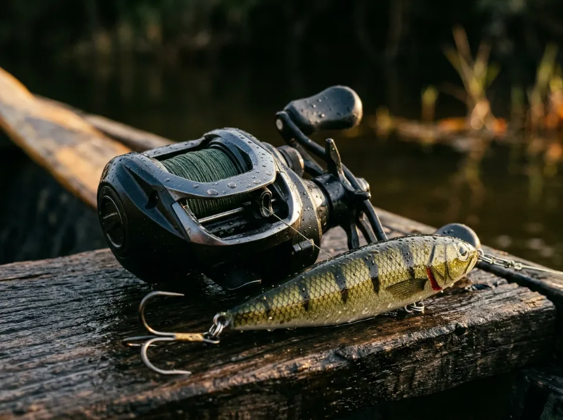
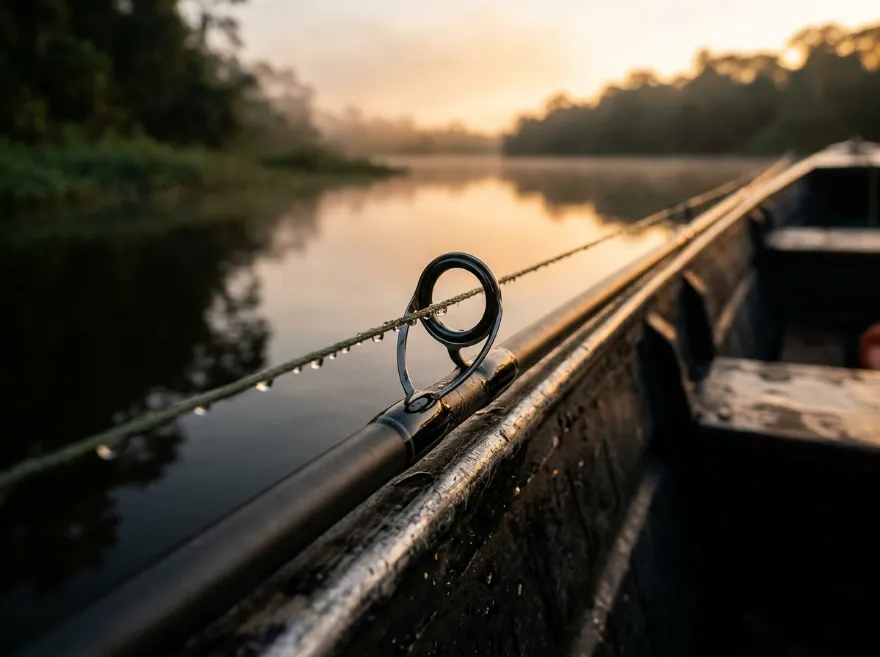
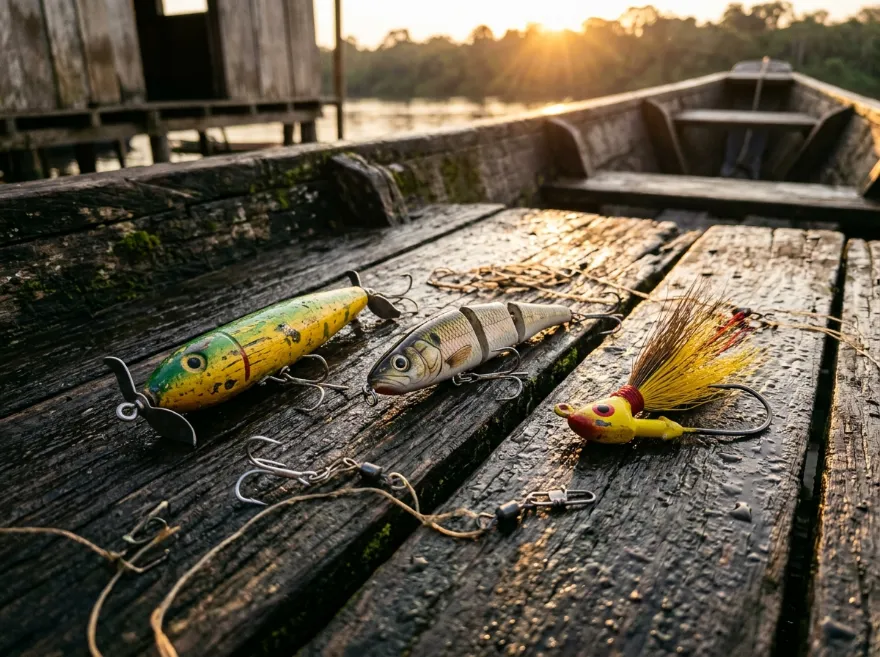
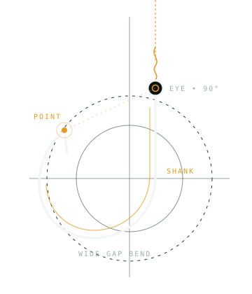

-61% OFF
Comunidade Oficial • WhatsApp & Telegram Gratuitos
Promoções de tralha de pesca direto no seu WhatsApp.
Receba oportunidades de varas, carretilhas, molinetes, iscas e acessórios em formato silencioso de avisos — sem conversa paralela e com seu número protegido na Comunidade (ou pelo Telegram).
100% gratuito • Apenas avisos de ofertas • Número oculto na Comunidade
Formato de Transmissão
Veja como os achados chegam sem ruído no celular.
Você recebe foto do equipamento, resumo direto e link da loja — sem centenas de mensagens aleatórias interrompendo o seu dia.
Simulação visual
Nota de transparência: os 3 cartões abaixo são ilustrativos para demonstrar o formato direto das postagens. As ofertas vigentes são publicadas na Comunidade do WhatsApp e no Canal do Telegram.
Tralha Secreta
Avisos • WhatsApp & Telegram
Prévia ilustrativa de formatação das postagens

-46% OFFMolinete Shimano Fx Fc 4000 Cor Preto/Dourado Lado da manivela Direito/Esquerdo

-31% OFFCamisa Pesca Capuz Camuflada Com Proteção Uv50+

Categorias do Canal
Do arremesso de superfície à organização no barco.
Principais frentes de equipamentos para pesca esportiva e recreativa que pautam o garimpo da Tralha Secreta.

Carretilhas e molinetes
Perfil baixo, perfil redondo e molinetes leves a pesados com ótimo custo-benefício de freio e recolhimento.

Varas e linhas
Varas inteiriças, bipartidas e telescópicas, além de carretéis de multifilamento 4X/8X, fluorocarbono e monofilamento.

Iscas artificiais e anzóis
Zaras, poppers, hélices, plugs de meia-água, jigs, softbaits, garatéias reforçadas, anzóis offset e snaps.
Caixas, vestuário e acessórios
Estojos organizadores, bolsas impermeáveis, alicates de contenção, óculos polarizados e camisas com proteção UV.
11.4m • Por Que Entrar na Comunidade
Menos tempo caçando abas. Mais tempo na água.
Silêncio total e privacidade no WhatsApp e Telegram
Tanto na Comunidade do WhatsApp quanto no Canal do Telegram, apenas a equipe publica e seu número de telefone fica oculto para outros participantes. Zero correntes ou bate-papo paralelo.
Oportunidades reunidas em um só lugar
Promos e cupons de grandes marketplaces e lojas de pesca filtrados para você conferir em segundos pelo celular.
Entrada livre no app que você já usa
Não pedimos e-mail nem formulário nesta página. Basta escolher WhatsApp ou Telegram, entrar gratuitamente e acompanhar.

14.0m • De Pescador Para Pescador
Equipamento certo para quando a oportunidade bater na linha.
Entre gratuitamente na nossa Comunidade do WhatsApp — ou acompanhe pelo Canal no Telegram — para receber as próximas publicações de ofertas.